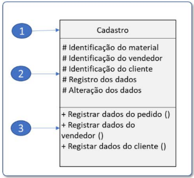
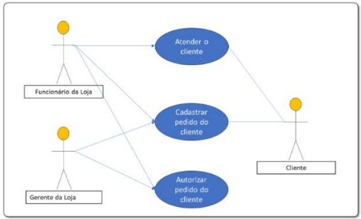

1. O processo unificado adota o desenvolvimento iterativo e incremental e define as funções do sistema aplicando uma abordagem baseada em cenários denominada modelo de casos de uso (PRESSMAN, 2011). Considerando o modelo incremental de ciclo de vida de software, é correto afirmar que:
2. Esta figura representa uma classe do diagrama simplificado do software de controle de pedidos. Assinale a alternativa que descreve o nome das partes da classe, indicadas por um círculo azul, de acordo com sua numeração.
3. A metodologia utilizada pelo fornecedor para desenvolver o software para a rede de supermercados consiste na utilização de uma metodologia ágil. Qual das alternativas descreve duas das principais características de uma metodologia ágil?
4. A figura a seguir representa um pequeno trecho do diagrama de caso de uso de um software de controle de pedidos em uma rede de materiais de construção. O que é representado pelos balões azuis nesse diagrama?
5. Em um algoritmo, a declaração de uma variável serve para identificá-la. Qual das alternativas abaixo indica o que deve ser declarado em uma variável?
6. Conceitualmente, projeto significa um empreendimento, ou seja, é um trabalho que tem como objetivo a criação de um produto, neste caso, um software, envolvendo um esforço temporário e não repetitivo e um determinado grau de incerteza na sua realização. Esse trabalho normalmente é executado por pessoas e está condicionado a prazo, custo, escopo e qualidade, como qualquer empreendimento. Essas atividades precisam ser planejadas, programadas, monitoradas e controladas. De acordo com Martins (2002) e Fernandes (1995), um projeto de software é a junção dos seguintes itens:
7. Um novo acionista assumiu a presidência da rede de supermercados e decidiu pela expansão do negócio. Como presidente, solicitou ao diretor de informática o desenvolvimento de um novo software para o controle financeiro de toda a rede de supermercados. O perfil do novo presidente é convencional, gosta dos projetos muito bem planejados, controlados e documentados. Em uma reunião com o diretor de tecnologia, deixou claro que não gosta de atrasos e não admite exceder o orçamento planejado de R$ 1 milhão em decorrência da incidência de problemas não previstos. Em uma nova e breve conversa com o diretor de tecnologia, o presidente também fez questão de solicitar 3 funções básicas para o novo software: controle de fornecedores, verificação dos saldos bancários e controle dos recebimentos.
Tendo em vista o perfil e as considerações do novo presidente, forneça ao desenvolvedor as seguintes informações: a indicação da metodologia que deverá ser utilizada e os principais motivos (pelo menos 3 motivos), a principal restrição do projeto, qual o plano de gerenciamento que deve ser elaborado com mais atenção e detalhe e o porquê. Cite também dois exemplos de requisitos funcionais e um exemplo de requisito não funcional e, por fim, faça uma análise das solicitações do gerente financeiro: as necessidades estão claras? Exemplifique.
Resposta Correta (Sugestão):
A metodologia deve ser tradicional (Cascata/Waterfall), motivada pelo perfil
convencional do presidente, que exige documentação abrangente, projetos bem
planejados e intenso controle. A principal restrição do projeto é o
custo/orçamento (não exceder R$ 1 milhão). O plano de gerenciamento que deve
ser mais detalhado é o Plano de Riscos, devido à não aceitação de atrasos e o
risco de estourar o orçamento por problemas não identificados.
Requisitos Funcionais (RFs):
1. O sistema deve permitir o Controle de Fornecedores.
2. O sistema deve permitir a Verificação dos Saldos Bancários.
Requisito Não Funcional (RNF):
A comunicação do software com os sistemas bancários deve ser segura e rápida
(conectividade/performance).
Análise das Necessidades:
As necessidades NÃO estão claras o suficiente. Faltam informações cruciais
como:
* Controle de Fornecedores: Qual tipo de controle? Financeiro? Logístico?
* Controle de Recebimentos: Recebimentos em dinheiro? Cartão? Qual o prazo?
É necessário levantar os detalhes para transformar essas necessidades em
requisitos funcionais bem definidos.
Abaixo encontra-se as respostas das questões de múltipla escolha: